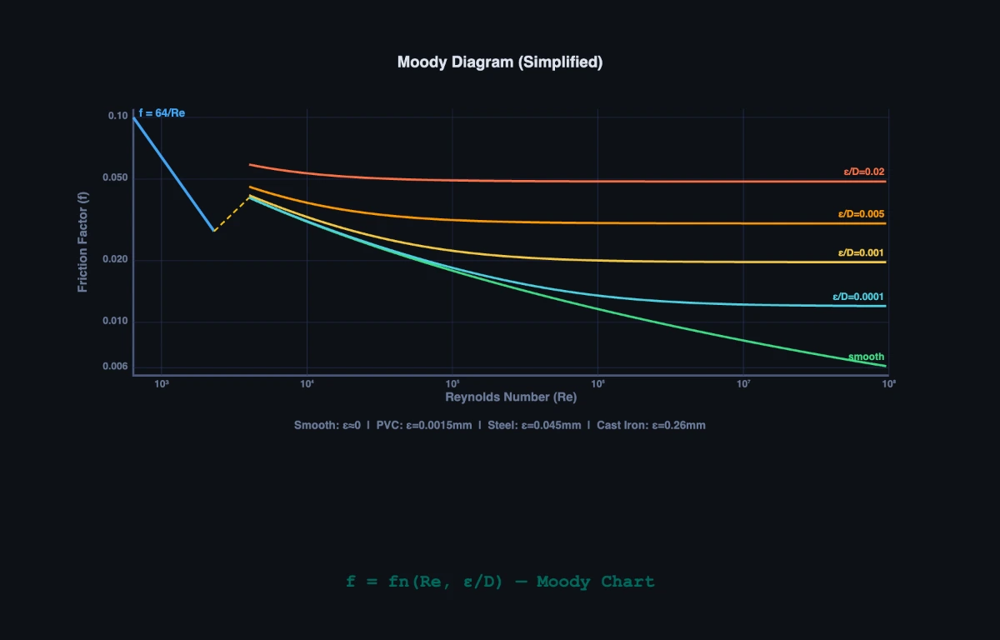

Pipe Pressure Drop Calculator — Darcy-Weisbach
Reynolds Number • Friction Factor • Pressure Drop • Head Loss — Simulate • Explore • Practice • Quiz
1 Overview
The Fluid Flow in Pipes Simulator is a comprehensive tool for studying internal pipe flow, covering Reynolds number calculation, laminar and turbulent flow regimes, the Darcy-Weisbach equation for major head loss, minor losses from fittings, and energy line visualisation (HGL and EGL). It supports four fluid types and four pipe materials, giving you the ability to explore how fluid properties and pipe roughness affect friction factor, pressure drop, and flow behaviour.
This tool is built for mechanical and civil engineering students, HVAC designers, plumbing engineers, and anyone studying pipe flow analysis. The four modes — Simulate, Explore, Practice, and Quiz — take you from interactive experimentation through concept review to problem-solving and self-assessment.
2 Configuring the System
The simulator opens in Simulate mode with Water flowing through a Smooth pipe at 1.00 m/s, 50 mm diameter, and 10 m length. The canvas displays the pipe cross-section with an animated velocity profile, pressure gradient, and HGL/EGL energy lines. Readouts show the Reynolds number, flow regime (laminar, transitional, or turbulent), Darcy friction factor, pressure drop, major and minor head losses, flow rate, and velocity.
Begin by selecting a Fluid (Water, Oil, Air, or Glycerin) and a Pipe material (Smooth, PVC, Commercial Steel, or Cast Iron). Then adjust the sliders for pipe diameter (10–500 mm), pipe length (1–100 m), flow velocity (0.1–10 m/s), and number of bends (0–10). Watch how the Reynolds number changes as you modify fluid type and velocity, and notice how the flow regime transitions from laminar to turbulent as Re exceeds 2300.
3 Running the Cycle
The canvas provides a rich visual representation of pipe flow. The velocity profile shows a parabolic shape for laminar flow (Hagen-Poiseuille) and a flatter, fuller profile for turbulent flow. The HGL (hydraulic grade line) and EGL (energy grade line) slope downward along the pipe length, with steeper gradients indicating higher head losses.
Use the Presets to load common scenarios: Laminar Flow sets low velocity in a viscous fluid, Turbulent Flow shows high-speed water in a rough pipe, High Loss System demonstrates the effect of many bends and fittings, and Air Duct simulates HVAC duct flow. The friction factor readout shows f = 64/Re for laminar flow and the Colebrook-derived value for turbulent flow. The pressure drop is calculated using the Darcy-Weisbach equation hf = f(L/D)(V²/2g), with minor losses hm = K(V²/2g) added for each bend.
4 The Underlying Theory
Switch to Explore mode to study 12 concept cards across three categories: Flow Basics, Key Equations, and Losses & Friction. Flow Basics covers the Reynolds number, laminar versus turbulent flow characteristics, velocity profiles, and the transition regime.
Key Equations explains the Darcy-Weisbach equation, the Hagen-Poiseuille equation for laminar flow, the Colebrook-White equation for turbulent friction factor, and the Moody diagram. Losses & Friction covers major (friction) and minor (fitting) losses, loss coefficients for bends, valves, and expansions, and the concept of equivalent length. Each card includes formulas, worked examples, and engineering context to help you connect theoretical equations with practical pipe system design.
5 Try a Problem
Practice mode generates randomised pipe flow problems. You might be asked to calculate the Reynolds number for oil flowing in a steel pipe, determine the friction factor for turbulent flow, or find the total head loss including bends. Enter your answer and click Check for instant feedback. Use Next Problem to generate a fresh scenario. Your score is tracked continuously to measure improvement.
Quiz mode presents five questions per session covering Reynolds number classification, Darcy-Weisbach calculations, the effect of pipe roughness on friction factor, and the distinction between major and minor head losses. After completing the quiz, review your results and revisit any topics in Explore mode where you need reinforcement. This preparation is directly applicable to fluid mechanics examinations and hydraulic engineering certification tests.
6 Tips, Keyboard Shortcuts & Export
- The Reynolds number Re = ρVD/μ is the single most important parameter in pipe flow. Learn to calculate it quickly — Re < 2300 means laminar, Re > 4000 means fully turbulent.
- Switch between fluids to see dramatic changes in Re. Glycerin has very high viscosity, so even moderate velocities produce laminar flow. Air has low density, which also affects Re significantly.
- Pipe roughness only matters in turbulent flow. In laminar flow, f = 64/Re regardless of pipe material. Switch between Smooth and Cast Iron at the same Re to confirm this in the simulator.
- Minor losses from bends and fittings can dominate in short pipe systems with many fittings. Increase the Bends slider and watch the minor head loss readout card appear and grow.
- Hover over the pipe in Simulate mode to inspect local head loss (h_loss), pressure drop (ΔP), and Reynolds number at any cross-section along the pipe length.
- Use the SI / IMP toggle (top-right) to switch all readouts, slider values, and canvas labels between SI units (Pa, m, m/s, L/s) and Imperial units (psi, ft, ft/s, gal/min).
- You can type values directly into the number input next to each slider for precise control — press Tab to move between fields. Typed values automatically update the slider and recalculate.
- Right-click the canvas to open the context menu: Export PNG saves a snapshot of the current canvas, Export CSV downloads all calculated parameters as a spreadsheet-ready file, and Copy Re Value copies the Reynolds number to the clipboard.
- Pair this tool with the Bernoulli's Principle Simulator to understand how ideal (frictionless) flow differs from real pipe flow with viscous losses.
Fluid Flow in Pipes — Reynolds Number, Friction Factor & Pressure Drop

Fluid flow in pipes is governed by the Reynolds number (Re = ρVD/μ), which determines whether flow is laminar (Re < 2300) or turbulent (Re > 4000). Head loss is calculated with the Darcy-Weisbach equation hf = f(L/D)(V²/2g). This free simulator covers Reynolds number, friction factor, pressure drop, HGL/EGL, and velocity profiles for four fluids and four pipe materials.
Engineers analyse pipe flow to design efficient piping systems for water supply, oil transport, HVAC systems, and chemical processing. Understanding flow regimes, pressure losses, and velocity distributions is essential for selecting pipe sizes, pump capacities, and ensuring system reliability. This simulator supports SI and Imperial units, right-click export, and four interactive modes.
What Is the Darcy-Weisbach Equation and How Is It Used?
The Darcy-Weisbach equation hf = f(L/D)(V²/2g) calculates major head loss due to friction along the pipe length, where f is the Darcy friction factor, L is pipe length, D is diameter, V is mean velocity, and g = 9.81 m/s². For laminar flow, f = 64/Re (Hagen-Poiseuille). For turbulent flow, the Colebrook-White equation (or Swamee-Jain approximation) relates f to both Reynolds number and relative roughness ε/D. The Moody diagram provides a graphical solution for friction factor across all flow regimes.
Minor losses occur at pipe fittings, bends, valves, expansions, and contractions. These are calculated as hm = K(V²/2g), where K is the loss coefficient specific to each fitting type. The total head loss in a piping system is the sum of major (friction) and minor (fitting) losses.
How Do You Calculate the Reynolds Number for Pipe Flow?
The Reynolds number is Re = ρVD/μ, where ρ is fluid density (kg/m³), V is mean velocity (m/s), D is pipe diameter (m), and μ is dynamic viscosity (Pa·s). A Reynolds number below 2300 indicates laminar flow with smooth, orderly streamlines and a parabolic velocity profile. Above 4000 the flow is fully turbulent with chaotic eddies and a flatter velocity distribution. Between 2300 and 4000 the flow is transitional.
How to Use This Simulator
In Simulate mode, select a fluid (Water, Oil, Air, or Glycerin) and pipe material (Smooth, PVC, Commercial Steel, or Cast Iron), then adjust diameter, length, velocity, and bends with the sliders or companion number inputs. Use the SI / IMP toggle to switch all readouts and canvas labels between SI and Imperial units. Hover over the pipe to inspect local head loss and pressure — right-click the canvas to export a PNG or CSV. Switch to Explore mode to study 12 concepts with worked examples. Practice generates random pipe flow problems, and Quiz tests knowledge with 5 randomised questions.
Osborne Reynolds, a Glass Tube, and a Thread of Dye
The number we use today started life as an experimental observation in 1883. Osborne Reynolds, a professor at Owens College in Manchester, ran water through a long glass tube and injected a thin filament of coloured dye into the centre. At low flow rates the dye traced a perfectly straight line down the pipe. He turned the valve a little. The line wavered. He turned it more. The whole thread broke up into chaotic swirls.
What Reynolds had found was that the same fluid in the same pipe could behave in two completely different ways, and that the transition between them depended on a single dimensionless ratio of inertial to viscous forces. He never wrote down “Re = ρVD/μ” in that form, but the modern grouping bears his name. His original 1883 paper is still readable; the photographs of the dye traces are reproduced in almost every fluid mechanics textbook today.
One thing worth knowing: the transition is not as clean as textbooks suggest. With a very smooth pipe and a careful approach, laminar flow can persist up to Re ≈ 10,000 or higher. With a rough pipe entry, turbulence starts at Re ≈ 1,000. The 2300 / 4000 numbers in the textbooks are typical for engineering inlets, not absolute physical constants.
A Worked Example — Water Through a 50 mm Pipe
Water at 20 °C flows through a horizontal 50 mm inside diameter commercial-steel pipe, 30 m long, at 1.0 m/s. Calculate Re, the friction factor, the head loss, and the pressure drop. Use ρ = 998 kg/m³, μ = 1.00×10−3 Pa·s, and roughness ε = 0.046 mm for commercial steel.
| Step | What it shows | Working | Result |
|---|---|---|---|
| Reynolds number | Re = ρVD/μ | 998 × 1.0 × 0.05 / 0.001 | Re = 49,900 — fully turbulent |
| Relative roughness | ε/D | 0.046/50 | 0.00092 |
| Friction factor (Swamee–Jain) | f ≈ 0.25 / [log10(ε/3.7D + 5.74/Re0.9)]² | (see numbers below) | f ≈ 0.0258 |
| Velocity head | V²/2g | 1 / (2×9.81) | 0.051 m |
| Friction head loss | hf = f(L/D)(V²/2g) | 0.0258 × (30/0.05) × 0.051 | 0.789 m |
| Pressure drop | ΔP = ρ·g·hf | 998 × 9.81 × 0.789 | 7.72 kPa |
That 30 m run costs about 7.7 kPa of pressure head at this flow rate. For a building water system feeding from a tank, that’s about 80 cm of static water head lost to friction. Not catastrophic, but worth knowing when sizing the supply tank. Double the velocity (to 2 m/s) and the head loss roughly quadruples to about 3 m, because hf scales as V².
The Flow Regime Ladder — What Changes as Re Climbs
One way I think about Reynolds number with students is as a ladder. Each rung represents a qualitative shift in the flow behaviour, not just a numerical boundary:
| Re range | Regime | Velocity profile | Mixing | Examples |
|---|---|---|---|---|
| < 1 | Creeping (Stokes) | Smooth parabola | Diffusion-dominated | Bacteria swimming, blood in capillaries, lubrication films |
| 1 – 2300 | Laminar | Parabolic, exact analytical solution | None (only molecular diffusion) | Honey from a jar, glycerine in a pipette, oil in narrow channels |
| 2300 – 4000 | Transitional | Unstable, intermittent | Bursts of turbulence between laminar patches | Slow water in domestic plumbing, blood in large arteries during exercise |
| 4000 – 105 | Turbulent (smooth wall) | Flatter logarithmic shape | Strong, thoroughly mixed across pipe | Water in building supply, fuel in vehicle lines |
| > 105 | Fully rough turbulent | Logarithmic with strong wall shear | Wall-roughness dominates over viscosity | Industrial process piping, large water mains, oil pipelines |
The qualitative jump from laminar to turbulent is the one most students miss. In laminar flow, particles travel in straight lines and adjacent fluid layers don’t mix. Add a drop of dye and it stays put as a thin line. In turbulent flow, every small parcel is being constantly thrown across the pipe by eddies. The dye gets smeared across the whole cross-section in about one pipe diameter of travel. The Moody diagram works for both regimes, but the underlying physics is different.
Where This Calculation Goes Wrong in Practice
The textbook setup — steady, isothermal, single-phase, straight pipe, no fittings — rarely happens in real systems. Five corrections you must know about:
- Minor losses from fittings dominate short systems. A 90° elbow has K ≈ 0.3, a partially-open gate valve K ≈ 5, a fully open globe valve K ≈ 10. In a domestic plumbing loop with a few dozen fittings, minor losses can exceed friction losses entirely.
- Pipe roughness varies with age. A new commercial steel pipe (ε = 0.046 mm) becomes a 30-year-old corroded pipe with ε = 0.5 mm or worse. Friction factor roughly doubles. Plumbers know this; new piping always runs cleaner than the calculations predict, old piping worse.
- Non-Newtonian fluids break the formula. Blood, paint, toothpaste, polymer solutions have viscosity that depends on shear rate. The simple Re = ρVD/μ needs a generalised Reynolds number for these.
- Two-phase flow is its own subject. Steam-water mixtures in boilers, oil-gas in pipelines — these don’t obey single-phase Darcy-Weisbach at all. There are correlations (Lockhart-Martinelli, Beggs-Brill) for these, and entire textbooks devoted to them.
- Compressibility matters for long gas lines. If pressure drop is a large fraction of inlet pressure, density changes along the pipe and you must integrate the energy equation. The simulator’s air mode assumes the drop is small enough to ignore this.
Books and Standards I Use for Pipe-Flow Work
- Cengel, Y. A. & Cimbala, J. M. — Fluid Mechanics: Fundamentals and Applications, 4th ed., Chapter 8 (Internal Flow). The clearest treatment of the Moody diagram and the laminar-turbulent transition I have found.
- White, F. M. — Fluid Mechanics, 8th ed. Goes deeper on the analytical pipe-flow solutions and turbulence statistics.
- Crane TP-410 — Flow of Fluids Through Valves, Fittings, and Pipe. The industrial reference for loss coefficients. Every piping engineer has a copy.
- ISO 5167 (multi-part) — flow measurement using differential pressure devices. The Venturi, orifice, and nozzle standards.
- Reynolds, O. (1883) — An experimental investigation of the circumstances which determine whether the motion of water shall be direct or sinuous, and of the law of resistance in parallel channels. Phil. Trans. Royal Society. The original paper. Worth reading at least once.
Pipe Flow Formulas — Quick Reference
| Parameter | Formula | Description |
|---|---|---|
| Reynolds Number | Re = ρvD / μ | Laminar if Re < 2300, turbulent if Re > 4000 |
| Darcy-Weisbach | hf = f × (L/D) × (v²/2g) | Major head loss due to friction |
| Hagen-Poiseuille (laminar) | Q = πD&sup4;ΔP / (128μL) | Volume flow rate in laminar pipe flow |
| Continuity Equation | A1v1 = A2v2 | Mass conservation for incompressible flow |
| Bernoulli's Equation | P + ½ρv² + ρgh = const | Energy conservation along a streamline |
| Flow Velocity | v = Q / A = 4Q / (πD²) | Average velocity from volume flow rate |
Kinematic Viscosity of Common Fluids (at 20 °C)
| Fluid | ν (m²/s) | Density (kg/m³) |
|---|---|---|
| Water | 1.0 × 10−&sup6; | 998 |
| Air | 1.5 × 10−&sup5; | 1.2 |
| Engine Oil (SAE 30) | 3.0 × 10−&sup4; | 880 |
| Glycerine | 1.2 × 10−³ | 1 260 |
| Mercury | 1.1 × 10−&sup7; | 13 546 |
| Hydraulic Oil (ISO 46) | 4.6 × 10−&sup5; | 870 |
Explore Related Simulators
If you found this Fluid Flow simulator helpful, explore our Bernoulli’s Principle simulator, Viscosity Experiment Virtual Lab, Pascal’s Law simulator, and the Wind Tunnel aerodynamics simulator for more hands-on practice.